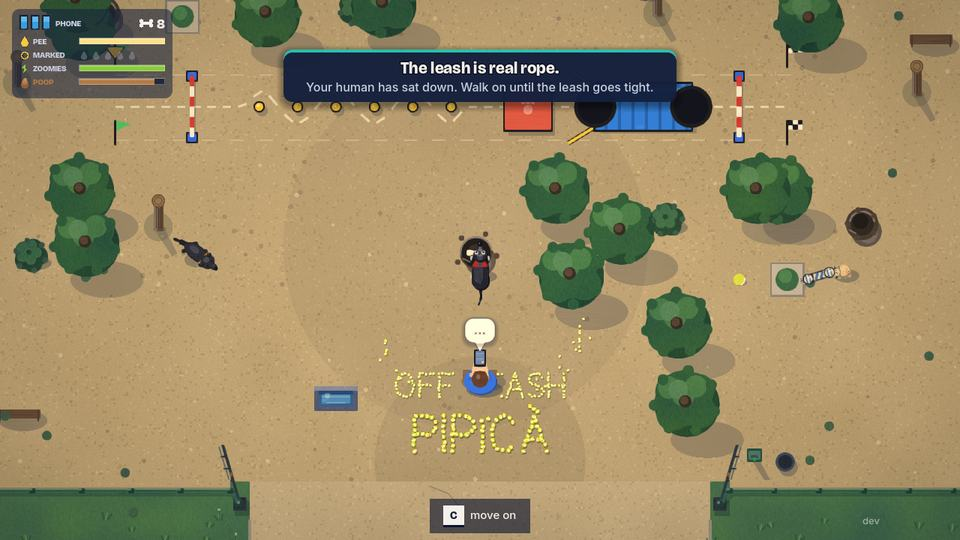

First Walk
Learn the leash, trick by trick
The familiar stretch of sidewalk outside your building and the fenced corner pipicà yard at the end of the block. Before your human picks up speed down the avenue, there is room to learn how slack works, when to dig in, how to wind the leash around a bollard, and how to turn small errands into a combo.
- Off-leash stop
- PIPICÀ (Fenced dog yard)
Screenshots



Lessons (19)
- Walk time.
- The leash is real rope.
- Lead the way.
- Dig in.
- Easy does it.
- Leave your mark.
- A good sniff.
- Follow your nose.
- Use your voice.
- The zoomies.
- Nature calls.
- Swing around a post.
- Tetherball.
- Ride the ledge.
- The brink.
- Chain them.
- Take a dare.
- Practice yard. off the leash
- Off the leash. off the leash